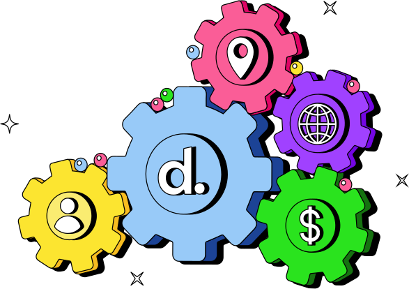

%EF%B9%96width=2000&height=875&name=Blog%20(42).png)

La mejora en el rendimiento de tu organización es posible si adoptas tecnologías digitales de vanguardia, modernas e innovadoras que colaboran con tal fin. Para eso, se requiere inversión de tiempo y recursos. Sin embargo, esos esfuerzos son recompensados con niveles de desempeño superiores por parte del talento y mejores indicadores clave de recursos humanos, con excelentes resultados para la rentabilidad de tu empresa.
Ahora bien, a pesar de que el 89% de las grandes empresas a nivel mundial tienen en marcha una transformación digital y de IA, solo han captado el 31% del aumento de ingresos esperado, de acuerdo con Harvard Business Review. ¿La razón? Los líderes deben estar convencidos del valor que supone la transformación digital dentro de sus empresas y deben confiar en cómo obtenerlo, de lo contrario, es poco probable que obtengan resultados exitosos.
¿Qué es la transformación digital?
La transformación digital es un proceso empresarial que se apoya en la tecnología avanzada para hacer un cambio radical en diversos aspectos y procesos internos de una organización en el plano digital. Esto se hace con la finalidad de optimizar las operaciones internas y construir una ventaja competitiva superior en un contexto de alta exigencia por parte del cliente externo e interno. Si bien suele pensarse que la transformación digital está más ligada a los procesos de negocio del mundo digital o los negocios digitales desde una perspectiva más afin al Marketing Digital, también tiene su injerencia en otras áreas, como los servicios financieros y la gestión de los recursos humanos.
Los pilares esenciales de la transformación digital son los que te explicamos a continuación:
- Tecnología y automatización: se basa en el uso de tecnologías emergentes y disruptivas con alto potencial, como es el caso de la inteligencia artificial y el análisis de bases de datos para tomar decisiones fundamentadas en datos objetivos y concretos. Estas herramientas son las que permiten a las empresas recopilar información relevante, analizarla y emplearla de forma eficiente en beneficio de la organización. Por ejemplo, con Workflow Builder de Deel, ahora puedes trabajar más rápido y brindar una mejor experiencia para tus colaboradores en todas partes.

- Orientación al cliente: existe un fuerte énfasis en la experiencia del cliente para satisfacer sus necesidades cambiantes. Con la información provista por las tecnologías que forman parte de los procesos de transformación digital, las empresas pueden comprender mejor a sus clientes. Y, por lo tanto, pueden diseñar ofertas personalizadas que respondan a sus demandas e intereses, incluso en tiempo real. Por ejemplo, la respuesta inmediata en redes sociales, la creación de aplicaciones móviles específicas o la personalización del e-commerce con el foco puesta en la experiencia de cliente.
- Cultura: implica una modificación sustancial y profunda de la forma en la que se trabaja dentro de una compañía, porque no solo consiste en incorporar nuevas tecnologías y ya. En consecuencia, las empresas deben fomentar la innovación, la colaboración y la adaptabilidad de sus equipos si pretenden superar las expectativas. De por sí, la implementación de la transformación digital requiere un cambio cultural profundo, con nuevas formas de pensar y hacer las cosas y una proyección a largo plazo.
- Liderazgo: implica mucho más que simplemente dirigir un equipo. En este contexto en particular, se torna en la capacidad de establecer una visión clara y convincente, así como de fomentar un entorno que abrace el cambio y la innovación. El líder no solo guía, sino que inspira a otros a abrazar nuevas tecnologías y a explorar constantemente nuevas formas de progresar.
Este tipo de liderazgo no solo promueve el crecimiento y la evolución, sino que también cultiva un espacio donde la creatividad y la adaptabilidad son fundamentales para el éxito. Las mejores prácticas se valoran, pero también se alienta a reinventar las metodologías existentes como el primer paso hacia la transformación y la excelencia continua.
- Seguridad de la información: si de componentes críticos se trata, la ciberseguridad es un imperativo de la transformación digital, tal como la protección de los datos y el tratamiento de la información sensible. Por ejemplo, la adopción de mecanismos de autenticación en dos pasos para ingresar a los sistemas de la empresa.
Así, quedaron atrás los días en los que las tareas repetitivas acaparaban buena parte de las jornadas de trabajo de los empleados. La automatización de procesos permite a las empresas realizar tareas de manera más rápida y precisa, reduciendo costos y optimizando la producción. Pero eso no es todo. Gracias a la transformación digital, las organizaciones pueden lanzar nuevos productos y servicios para adaptarse a las demandas del mercado, al mismo tiempo que pueden llegar a nuevos mercados por medio de la conexión global. En otras palabras, la tecnología está transformando los negocios.
A propósito, ¿te gustaría conocer cuáles son los procesos de RR. HH. que puedes automatizar? Descúbrelos en este otro blog.
Rediseña tus procesos de RR.HH. para que esté todo en el mismo lugar, te mostramos cómo elegir el mejor SIRH.


Beneficios de la transformación digital
Estas son las principales ventajas que explican la importancia de la transformación digital:
Construye conocimiento a través de la inteligencia de datos
Uno de los principales beneficios de la transformación digital es el poder construir conocimiento a través de la inteligencia de datos. El procesamiento de los datos manual es un proceso tedioso que no solo conlleva demasiado tiempo y la inversión de numerosos recursos, también implica un alto margen de error humano. Con la incorporación de tecnología adecuada para la transformación digital, esto se resuelve.
Como consecuencia, tu empresa puede beneficiarse de la capacidad de analizar los datos y sugerir áreas de mejora que pueden marcar “un antes y un después” en la eficiencia operativa de tu negocio, con nuevas oportunidades de crecimiento y desarrollo en esta era digital. Pero, ¿de qué se trata este proceso de transformación digital a partir de datos? Veamos a continuación:
- Recopilación: a partir de diversas fuentes para nutrir el almacenamiento de datos, tales como las encuestas de clima, los sistemas de información de recursos humanos, los registros de formación y capacitación, y la entrega de retroalimentación hacia el empleado. Estos datos pueden incluir información sobre el desempeño de los empleados, la satisfacción laboral, la eficiencia de los procesos internos y otros aspectos relacionados.
- Análisis: una vez recopilados los datos, estos se someten a un análisis detallado, el cual puede implicar la identificación de tendencias y patrones de comportamiento o conducta. Por ejemplo, en el contexto de Recursos Humanos, podría implicar el análisis de cómo los nuevos empleados perciben el proceso de onboarding.
- Generación del conocimiento: tras el análisis, la empresa puede generar conocimiento relevante. Porque puede comprender mejor el rendimiento de los empleados y cuáles son las necesidades de capacitación, por ejemplo.
- Toma de decisiones: con la evidencia clara, los líderes pueden tomar decisiones respaldadas en datos certeros. En el ejemplo del proceso de onboarding, la empresa podría ajustar sus prácticas para adaptarse a las preferencias y necesidades de los empleados remotos, para una tasa de retención de las nuevas contrataciones más efectiva.
- Optimización continua: este proceso no inicia y se acaba por única vez. Por el contrario, las empresas que logran despegar y se animan a expandir sus horizontes, continúan recopilando y analizando datos para refinar sus operaciones, procesos y estrategias. Este enfoque es fundamental para mantenerse competitivo.
Optimización de los procesos internos
Imagina una empresa que opera a escala global, con empleados distribuidos en diferentes ubicaciones geográficas. Como profesional de Recursos Humanos de dicha organización, la gestión de la nómina y los pagos puede ser todo un reto si debes hacerlo de forma manual. En ese caso, probablemente necesitarás bastante personal abocado a la tarea de confeccionar y calcular las nóminas, así como también de revisar el cumplimiento por cada país de origen de los empleados, entre otros aspectos a tener en cuenta.
Sin embargo, con la transformación digital, se pueden optimizar los procesos internos, incluyendo los relacionados directamente con el departamento de Recursos Humanos. ¿Cómo hacerlo? Con la adopción de softwares dedicados. Siguiendo el ejemplo, esta empresa podría incorporar la solución de Deel para hacer uso de funciones como gestionar gastos, bonificaciones y subsidios a través de un dashboard fácil de usar. Ya sea que para gestionar gastos regulares o bonos basados en proyectos, la nómina on-demand y las fechas límite extendidas de Deel ofrecen flexibilidad para adaptarse a necesidades únicas de cada organización.
Mejora en la satisfacción del empleado
La creación de un lugar de trabajo valioso y representativo para los empleados es posible con la transformación digital. De hecho, según un estudio de Microsoft, los empleados dicen estar tres veces más satisfechos cuando forman parte del flujo correcto en el espacio de trabajo, para sentir que el trabajo que hacen es verdaderamente importante. Imagina cómo puedes contribuir a esta realidad en tu organización si implementas la transformación digital. Aquí algunos de los principales aspectos que contempla este beneficio:
- Eficiencia al comunicar: facilita la comunicación entre empleados y equipos, independientemente de su ubicación geográfica. Las herramientas de colaboración en línea, como Slack, Asana, Trello y Google Meet permiten una interacción fluida a pesar de la distancia.
- Flexibilidad para trabajar: al adoptar políticas de trabajo asincrónicas basadas en el trabajo por objetivos, con pautas claras sobre cómo abordar cada uno de los proyectos internos. Esto permite a los empleados adaptar su jornada laboral a sus necesidades personales para un mejor balance entre la vida laboral y personal.
Aprende cómo crear un equipo sin fronteras, acceder a talentos clave para tu negocio y aumentar la retención.


Herramientas para lograr la transformación digital
Descubre las siguientes herramientas digitales y tecnologías clave:
Big Data
Se trata de un pilar fundamental dentro de la estrategia de transformación digital empresarial y se basa en la recopilación y análisis de enormes volúmenes de datos, que pueden estar estructurados o no. Esto con la finalidad de extraer información valiosa, como la identificación de patrones y tendencias que permiten pensar en nuevas tácticas y acciones para cambiar el rumbo del negocio o de la gestión de los empleados. Veamos algunos ejemplos:
- Amazon Web Services Big Data: un conjunto de servicios de big data provisto por Amazon, el cual permite almacenar, procesar y analizar importantes cantidades de datos.
- Apache Spark: una herramienta de código abierto que cuenta con la suficiente capacidad para el procesamiento de grandes cantidades de datos de forma rápida y eficiente. Ideal para quienes requieren el procesamiento de datos en tiempo real.
- Hadoop: un framework de código abierto para procesar y almacenar datos, utilizada por empresas como Meta.
Inteligencia artificial
La inteligencia artificial se ha consolidado como una herramienta fundamental en la transformación digital de las empresas. Al aprovechar el poder del machine learning (aprendizaje automático), las organizaciones pueden analizar grandes cantidades de datos de manera eficiente y obtener información valiosa para la toma de decisiones estratégicas. El machine learning capacita a los sistemas para aprender patrones complejos y realizar predicciones precisas, lo que permite a las empresas automatizar procesos, optimizar operaciones, mejorar la personalización de servicios y productos, así como anticipar tendencias del mercado.
¿Tienes interés en seguir desarrollando tus productos o servicios para que respondan a las necesidades de tus clientes? En un contexto altamente competitivo, el uso de la tecnología adecuada es imprescindible. Con la inteligencia artificial como herramienta, cuando se trata de velar por el cumplimiento, puede ser de gran ayuda.
Deel IQ es el asistente AI de Deel para el trabajo global, el cual puede verificar el compliance por ti, profundiza en los datos de tu fuerza laboral y te permite tomar decisiones comerciales más inteligentes y rápidas. ¿Qué puedes hacer con Deel IQ? Veamos:
- Obtén respuestas instantáneas sobre las leyes locales en más de 150 países.
- Conoce los salarios locales, los costos de los empleadores y mucho más.
- Haz cálculos numéricos sobre los datos de tu fuerza laboral sin esfuerzo manual.

Verifica el compliance, profundiza en los datos de tu fuerza laboral global y toma decisiones comerciales más inteligentes y más rápidas utilizando la IA.


Automatización
La pandemia fue un motor muy importante para impulsar la automatización. De hecho, de acuerdo con una encuesta de Mckinsey, casi la mitad de los participantes opinaron que la pandemia aceleró el despliegue de este tipo de tecnologías. Al integrar sistemas y tecnologías automatizadas, las organizaciones pudieron comenzar a agilizar tareas repetitivas, reducir errores y optimizar la eficiencia operativa. La automatización permite liberar a los empleados de labores rutinarias, otorgándoles la capacidad de centrarse en actividades de mayor valor agregado que requieren habilidades humanas, como la creatividad, la resolución de problemas y la toma de decisiones estratégicas.
Pero, ¿cómo aprovechar en el contexto actual la integración de tecnologías digitales para obtener lo mejor de la automatización en la transformación digital de Recursos Humanos? Esto puede lograrse especialmente cuando se integran plataformas de uso diario con soluciones de gestión de nómina, compliance y payroll como Deel. Si conectas Deel con tus plataformas de RR. HH. favoritas, puedes reducir las tareas manuales, optimizar los flujos de trabajo y facilitar mucho la vida:
- Integra las facturas con tus herramientas contables.
- Evita errores y ahórrate el trabajo manual con la contabilidad automatizada.
- Controla lo que gastas y dónde lo gastas.
- Sincroniza los gastos.
- Automatiza tus pagos.
- Mantén sincronizados los detalles del equipo, los contratos y los documentos de compliance
- Ofrécele a tu equipo una experiencia excepcional.
¿Quieres saber más? Descubre todo acerca de las nuevas integraciones de Deel.
Internet de las Cosas
Sin dudas, Internet de las Cosas (IoT por sus siglas en inglés, Internet of Things) es otra de las herramientas de transformación digital por excelencia. Sirve para conectar dispositivos móviles y plataformas de uso diario, con el fin de recopilar y transmitir datos. Así, con el uso de la IoT, puedes recopilar datos de sensores y dispositivos en tiempo real para mantener tus reportes actualizados, al mismo tiempo que puedes activar acciones automáticas en función de los datos que se obtienen. Por ejemplo, las plataformas basadas en IoT permiten la colaboración en línea y en tiempo real de equipos distribuidos. Los empleados pueden verificar quiénes están disponibles para hacer reuniones virtuales, sin la necesidad de estar consultando uno a uno.
Descarga esta guía de onboarding remoto con plantillas y checklists para una introducción exitosa de empleados.


¿Cómo implementar la transformación digital en tu empresa?
La planificación e implementación de la transformación digital son procesos fundamentales para mantener la competitividad en la era actual y empezar a pensar en los nuevos modelos de negocio.
Aquí te compartimos los principales consejos para llevar a cabo la transformación digital en tu empresa:
1. Define objetivos claros
Comienza por definir los objetivos de la transformación digital. Puedes hacerte las siguientes preguntas: ¿qué deseas lograr?, ¿mayor eficiencia operativa, mejor experiencia del cliente o fortalecer la expansión global de tu empresa?
2. Involucra a los equipos desde el principio
Quien sabe más del día a día de tu organización son tus propios empleados. Por eso, solicita feedback y anímalos a participar en diferentes encuentros y conversaciones sobre la transformación digital, con el objetivo de que puedas recopilar información valiosa que te ayudará a identificar áreas de mejora en tus procesos.
3. Evalúa tecnología y recursos actuales
¿Cómo es la infraestructura tecnológica actual? ¿Con qué herramientas, plataformas y recursos cuentan tus empleados para llevar a cabo sus funciones? Verifica si todas esas herramientas responden de forma efectiva a las necesidades de tu empresa. Es decir, identifica aquello que funciona y lo que requiere actualización.
4. Establece un liderazgo fuerte
Si tienes empleados con experiencia para liderar proyectos de transformación digital, ¿qué mejor idea que aprovechar todo ese bagaje de conocimiento para producir un cambio exitoso en tu organización? Estos líderes serán capaces de inspirar y guiar a tu equipo a través del cambio.
5. Automatiza procesos manuales y rutinarios
Como adelantamos anteriormente, la automatización facilita el ahorro de tiempo, reduce el error humano y permite que el personal pueda hacer concentrar su atención en tareas estratégicas. El 69% del trabajo rutinario que actualmente realizan los gerentes estará completamente automatizado para el próximo año, según investigaciones de Gartner.
Pasos para automatizar procesos manuales:
- Realiza una auditoría de procesos.
- Analiza la carga de trabajo manual y el tiempo dedicado semanalmente a dichas tareas.
- Considera los procesos basados en reglas claras y predecibles (son candidatos por excelencia para la automatización).
- Evalúa la escalabilidad.
6. Inspírate en casos exitosos para la transformación digital
Aquí te presentamos los casos de empresas que lograron el éxito con la transformación digital:
Transformación digital en Recursos Humanos y Finanzas
La transformación digital ha revolucionado las áreas de RR. HH. y Finanzas al introducir novedosas herramientas y soluciones tecnológicas que optimizan el proceso de gestión del talento. Además de tener un impacto directo en las funciones financieras mediante la automatización de procesos contables y análisis de datos. Por ejemplo:
- Plataformas de gestión en la nube híbrida: permite el acceso y la actualización de datos desde cualquier ubicación geográfica, en cualquier momento del día.
- Análisis de datos: herramientas como Tableau y Power BI para Recursos Humanos proporcionan información clave en relación al desempeño de los empleados.
- Gestión de gastos y presupuestos: para automatizar el proceso de informes y ayudar a controlar los costos. Se trata de herramientas clave para la creación y seguimiento de las finanzas.
En Deel, estamos comprometidos a ayudarte a aprovechar al máximo la transformación digital, y a garantizar que tu empresa esté a la vanguardia en cuestiones de recursos humanos, finanzas y liderazgo. ¿Cómo lo hacemos?
- API de Deel HR: automatiza tus operaciones de talento y ahorra unas cuantas horas de administración. Es muy fácil. Solo tienes que conectar tu stack tecnológico con Deel para automatizar tareas repetitivas. Desde la creación automática de contratos hasta la sincronización de timesheets para pagos, controla todo el ciclo de vida de los empleados a tu manera y elimina la entrada de datos duplicados.

- Global Payroll: ejecuta la nómina global, incluso mientras duermes, en más de 100 países con una sola plataforma para agilizar las operaciones internacionales y eliminar la administración continua del compliance local, los impuestos, los beneficios y mucho más.

Haz que la tecnología impulse tu empresa con Deel
La tecnología ha revolucionado la forma en que las empresas abordan la gestión de recursos humanos, siendo un pilar fundamental en la transformación digital. Este cambio no solo implica la automatización de procesos, sino que redefine la forma en que los equipos trabajan y colaboran. Sin dudas, la transformación digital puede dar un giro 360° a los resultados de tu empresa.
Deel HR es la plataforma de RR.HH. global gratuita, que se adapta a tu negocio. Gestiona a todo tu equipo sin ningún costo, a través de Deel, desde colaboradores locales hasta freelancers, así como otros tipos de contratación. Y no olvides crear mejores integraciones conectando Deel con las plataformas de recursos humanos que utilizas a diario para reducir tareas operativas y facilitar las tareas de tus empleados.
¿Qué esperas para hacer tus operaciones y procesos de Recursos Humanos más eficientes? Conoce más sobre cómo gestionar en segundos diferentes usuarios en varias apps.
A un solo clic puedes escribirnos para hacernos las preguntas que tengas, programar un demo de producto, encontrar soluciones estratégicas y mucho más.


.svg)